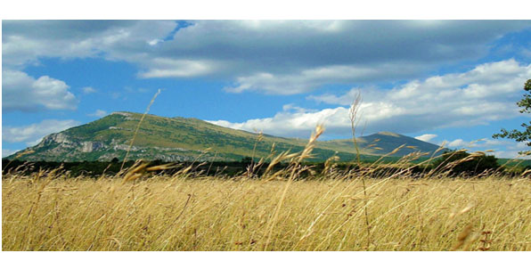

Planina Rtanj već decenijama privlači pažnju svojim neobičnim pojavama, poznatim i van granica naše zemlje. Meštani a i posetioci ovog kraja tvrde da su bili svedoci čudnih pojava kakve su raznorazne neobične letelice, vanzemaljci, svetleće lopte koje se iznenada pojavljuju i nestaju, a pojedinci čak tvrde das u čuli jezive krike i glasove na nepoznatom jeziku, od kojih im se, kako kažu, dizala kosa na glavi. Ovo su tvrdnje svetskog kongresa ufologa, održanog u američkom gradu Baltimoru, kao i američkog udruženja ljubitelja vanzemaljaca i NLO objekata.
Pored mnogobrojnih svedoka iz Srbije, paranormalne pojave na ovoj planini zabeleželi su i prestižni svetski mediji, a posebnu pažnju privlači oblik ove zagonetne planine.
NLO udruženja i agencije iz celog sveta želele su da postave istraživačke centre na Rtanj, ali država Srbija to nije dozvoljavala. I čuveni autor „Odiseja u svemiru 2010“ Artur Klark napisao je pre desetak godina da Rtanj nije planina, već da se ispod krije piramida, najstarija tvorevina najverovatnije vanzemaljske civilizacije.
Planina Rtanj ima oblik trostrane piramide, a navodno je to samo jedna od tri na celom svetu, druga se nalazi na Antarktiku, dok je treću progutala zemlja. Prema predanjima, najstarija civilizacija na Zemlji ih je gradila jer su pomagale u uzdizanju duhovne energije. Tek kasnije su građene četvorostrane. Upravo ovaj oblik planine intrigira velki broj ljudi.
“Često neko od nas vidi i čuje nešto od čega nam se sledi krv u venama. Ljudi, to nije šala niti izmišljotina. Znam da mnogi ne veruju, možda ne bih ni ja da svojim očima nisam video velike svetleće kugle kako se neujednačeno kreću po nebu! Još gore od toga bilo je kad sam čuo da neko izgovara moje ime, a posle nastavlja da mumla nekim jezikom koji ne može da se razume. To je tako trajalo tridesetak sekundi, a za to vreme mi se ukočilo celo telo i naježila koža na glavi, nisam mogao ni da beknem” - priča J. M., stanovnik Rtnja.
Priča o zlatu i draguljima u utrobi planine, a koja je verovatno vezana i za legendu o dvorcu čarobnjaka koji je po predanju postojao na ovom mestu i bio visok koliko i današnja planina, u kome je čuvano ogromno blago, donela je mnogo nevolje ovoj prirodnoj lepotici. Neumorni i neumoljivi tragači za zlatom u nekoliko navrata su dinamitom razrušili kapelicu posvećenu Svetom Đorđu na vrhu planine, koju je svom mužu Julijusu Minhu, bivšem vlasniku rudnika na Rtnju, podigla supruga Greta. U blizini se nalazi i Sokobanja, koja se ubraja u red najznačajnijih banjskih centara u Srbiji.
Pobegli na Rtanj od smaka sveta
Verujući u priče o smaku sveta i majansko proročanstvo koje govori da će 21.12.2012. godine kometa udriti u Zemlju, brojni posetioci iz celog sveta a najviše je bilo Rusije, Švedske, Grčke i Italije pohrlili su na Rtanj, smatrajući daće jedinoova planina opstati van domašaja apokalipse.
